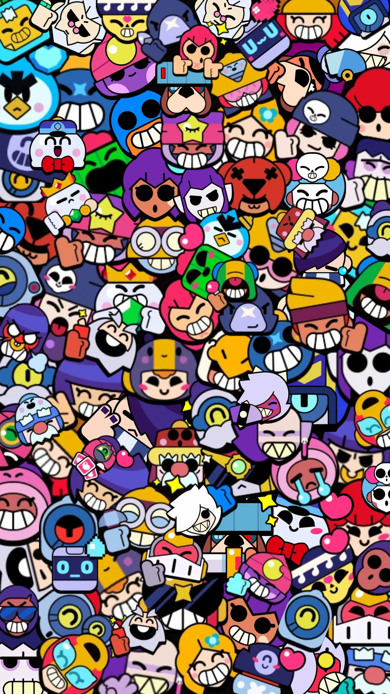

Batalhas 3x3 agitadas e batalha de último sobrevivente feitas para celular! Jogue com seus amigos ou sozinho em inúmeros modos de jogo em menos de três minutos. Desbloqueie e melhore vários Brawlers com habilidades Super, poderes de estrela e acessórios. Colecione visuais únicos para se destacar e tirar onda. Lute em ambientes variados dentro do universo Brawl!

"Brawl Stars" é um jogo mobile da Supercell que combina batalhas em arena e elementos de estratégia. Lançado em 2018, o jogo oferece vários modos, como Gem Grab, Showdown, Brawl Ball e Heist, onde equipes competem para cumprir objetivos diversos. Cada personagem, chamado Brawler, tem habilidades únicas e pode ser personalizado. O jogo é conhecido por seu design colorido e jogabilidade dinâmica, atraindo tanto novatos quanto jogadores experientes.